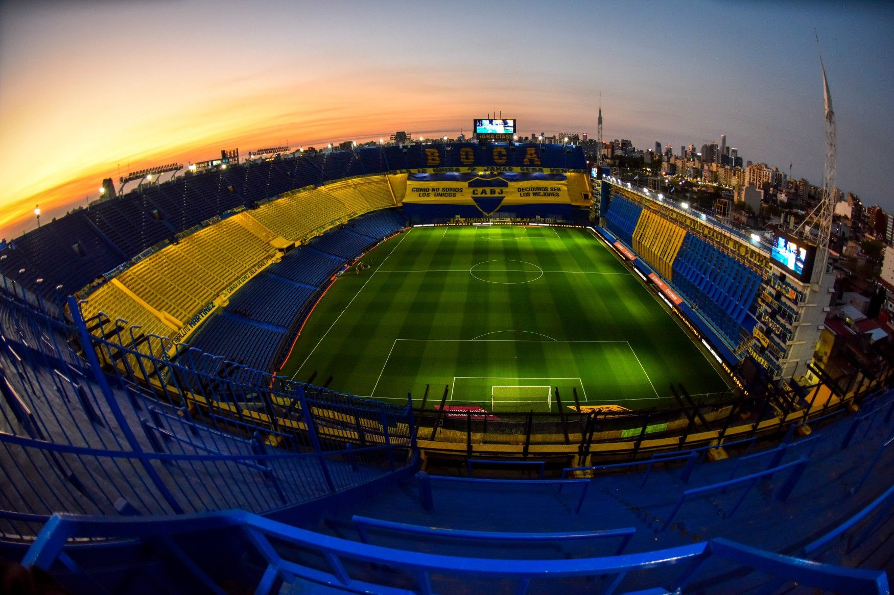

El Club Atlético Boca Juniors es una entidad deportiva argentina con sede en el
barrio de La Boca, Ciudad Autónoma de Buenos Aires. Fue fundado el 3 de abril de 1905
por seis vecinos adolescentes hijos de inmigrantes italianos. Su principal disciplina
es el fútbol masculino, cuyo primer equipo participa en la Primera División de Argentina.
Además, el club compite de forma profesional, tanto a nivel nacional como internacional,
en baloncesto, voleibol, futsal, fútbol femenino y balonmano mientras que deportes como
el boxeo, judo, karate, taekwondo, gimnasia rítmica, gimnasia artística y hockey se
practican a nivel amateur.
Boca Juniors participa de la Primera División de Argentina desde 1913 y, desde el Torneo
Inicial 2013, se convirtió en el único club que disputó todas las temporadas en
Primera División desde el comienzo del profesionalismo en 1931. Además, es el equipo
con mayor cantidad de partidos disputados. A partir del 8 de junio de 2015, Boca Juniors
batió el récord de mayor permanencia ininterrumpida en Primera División, con 37 312 días.
El equipo juega sus partidos como local en el estadio Alberto J. Armando, conocido como
«La Bombonera»; allí también ha sido localista en numerosas ocasiones la Selección
Argentina de fútbol.
Es considerado uno de los denominados cinco grandes del fútbol argentino, a partir de
que la AFA dispusiera la implementación del llamado «voto proporcional» en 1937,
que consistía en darle mayor poder de decisión a aquellos clubes con mayor número
de socios, mayor antigüedad y mayor cantidad de títulos. Es el único de los cinco
grandes que no ha descendido de Primera División.
